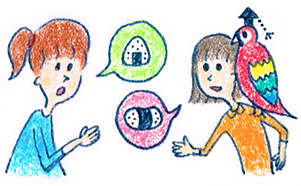

１４ : 傾聴トレーニング 言い換えのオウム返し
・傾聴トレーニング 言い換えのオウム返し

前回は、傾聴の基本「オウム返し」を練習しました。基本のオウム返しでは相手の言葉を「そのまま返します」相手の言葉を繰り返すオウム返しはとても安全度が高いのですが、1つ問題が出てきます。
それは多用すると、「お前はオウムか！」状態になってしまうことです。 たまにやる分には全く問題ないのですが、連続で相手の言葉を使った繰り返しをしていると、違和感が出てきてしまうのです。 そこで今回学ぶ「言い換えのオウム返し」が必要になってきます。
私はオウム返しをするときは、10～20％ぐらいそのまま繰り返して、80～90％ぐらいは言い換えて返しています。 参考にしてみてくださいね♪
・聞き上手の超重要スキル 言い換えのオウム返し
言い換えのオウム返しとは実際どのような返したかを意味するのでしょうか？
先ほどは、そのまま相手の言葉を繰り返す練習をしたわけですが、今度はちょっと言い換えて返してみるのです。
会話の相手
「昨日さあ～上司に怒られちゃってさ。。書類のミスが多いって・・・明日仕事いきたくねえよお」
傾聴側
「失敗すると、会社行くの嫌になるよな・・・」
という感じです。ミス＝失敗、いきたくない＝嫌になると大体同じ意味で返していくのです。するととても自然な返しになります。 相手の発言と意味が近ければ、大体大丈夫です。
・センスが無いとズレてしまう
言い換えのオウム返しは、ちょっとずれることがあるといいますか、相手の言葉をちょっと変えてしまうので、センスが無いと「いやあ～ちょっと違うんだよな」と相手に思われてしまうこともあるので注意が必要です。
例えば先ほどの例で考えると 「上司が激怒したから、会社辞めたいんだね！」と返したらさすがに言い換えすぎです。 そうじゃないんだよなあ～と思われてしまうでしょう。
練習問題
ピンとこない方もいらっしゃるかもしれません。 習うより慣れろです！ちょっと練習してみましょう！
例１
「最近ミスドで書類整理することが多いんだ。何気に電源が使えるしノートpcも使えるから居心地いいよ。」
⇒そのまま繰り返すとどうなりそうでしょうか？
⇒ちょっと言い換えて繰り返すとどうなりそうでしょうか？
例２
「住んでいるところは横浜ですよ。横浜といっても結構広くて、私が住んでいるところは住宅街です。」
⇒そのまま繰り返すとどうなりそうでしょうか？
⇒ちょっと言い換えて繰り返すとどうなりそうでしょうか？
初めてなので5分ぐらいかかっても大丈夫です！ 答えを見ないで考えることが大事です。 うんうんうなりながら考えてみましょう
考えましたか？
考えてないのがバレていますよ！！ いまクリックして下に行こうとしましたねっ！
さて、もう一度是非考えてみてください。
さすがに考えて下さった方が多いでしょう。 では回答例をみてみてください。
回答例
例１
「最近ミスドで書類整理することが多いんだ。何気に電源が使えるしノートpcも使えるから居心地いいよ。」
⇒そのまま繰り返すとどうなりそうでしょうか？
・居心地いいんだね～
・電源使えるんだ～
⇒ちょっと言い換えて繰り返すとどうなりそうでしょうか？
・何かとミスド利用してるんだね
・外で仕事とするには便利だね
例2
「住んでいるところは横浜ですよ。横浜といっても結構広くて、住宅街で静かな場所ですよ。」
⇒そのまま繰り返すとどうなりそうでしょうか？
・静かな住宅街なんだね
・横浜に住んでいるんだね
⇒ちょっと言い換えて繰り返すとどうなりそうでしょうか？
・わりと落ち着いたところに住んでいるんだね
・ゆったりした場所なんですね
こんな感じで言い換えて返せていればOKです！！ 講座でも言い換えのオウム返しは徹底的に練習します。 1000回はやりますよ笑。なんとかついてきてくださいね。
 |
|